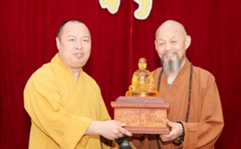

1948年11月，本焕长老到广东南华寺诚接
2000年秋，时为本焕长老的爱徒和重要助手，现为
如是因缘，印顺法师于四祖寺初识净慧长老，与净老一见如故。当时
2003年，已届97岁高龄的本老在完成四祖寺重建工作后，从四祖永久昌盛大计出发，主动辞去四祖寺方丈，邀请他的师弟净慧长老继任四祖寺方丈。时任本老侍者的印顺法师是净老升座的主要执行人。经其上下奔走，先后经由湖北省委常委、黄梅市政协、黄梅市
2008年10月18日，印顺法师作为本焕长老的衣钵弟子，升任深圳弘法寺第二任方丈，时年为印顺法师出家的第八个年头。中国佛教协会一诚长老、净慧长老、永寿法师、明生法师、祜巴龙庄勐副会长，香港觉光长老、澳门健钊长老等海内外诸山长老、法师居士、各界嘉宾纷纷前来祝贺
印顺法师在升座法语中说：“（印）顺当继恩师之志，竭心尽力，依佛制、遵清规，与大众同甘共苦、上下平等，护持道场，永振宗风。”净慧长老在其升座前就关心备至，协助本焕长老，组织多方为其筹备升座晋院仪式，并于当日出席见证了印顺法师的升座晋院。
2011年12月5日，印顺法师在泰国大王宫接受了泰国普密蓬国王亲自颁赐的 “华僧大尊长”称号。据悉，在泰国只有对佛教有贡献，在信众中有崇高威望的僧人才有可能获此殊誉。印顺法师获此称号，是泰国政府与人民对深圳弘法寺及印顺副会长多年来在中泰友好方面作出巨大贡献的肯定。净慧长老欣闻此事，特赶赴深圳，久久握着印顺法师的手感慨万千。长老感叹汉传佛教发展之迅速，印顺法师福报之深厚，百年罕见。他希望印顺师侄继续传承本焕长老行愿大千的精神，不愧对这个称号，正如印顺法师升座时本老的寄语“只要有阳光的地方，印顺必会把
2011年3月29日，印顺法师在尼泊尔
净慧长老对印顺法师寄望颇深，他表示印顺法师的升座是中华佛教的盛事，获得了中国政府及尼泊尔政府的大力支持。中华寺终于找到最合适的主人，中华寺在印顺法师的主持下，在各位大护法的护持下，相信在未来有非常好的发展，使汉传佛教在佛陀家乡，回报当地的人民。相信在印顺法师在担任中华寺主持后一定会使汉传佛教在佛陀的家乡开出更加鲜艳的花朵，结出更加丰硕的成果。
尼泊尔中华寺是中佛协迄今在国外建立的唯一一座“国家级”寺院。在蓝毗尼，有30多个国家兴建寺庙，中华寺是其中之一。蓝毗尼这个
净慧长老于本焕老和尚圆寂后，感慨世事无常，幻生幻灭，又感近年身体每况愈下，遂向印顺法师反复询问传承一事。法师坚决表示虽然有本老重建的因缘，但四祖寺方丈应由净老弟子中选出杰出贤能之人担任，再三推举明基法师，认为他深受净老传承，可堪此重任，净慧长老后来亦点头同意。自虚云长老以来，本焕老和尚与净慧长老传承法脉，法谊悠长，超过一甲子，今日徒孙亦不分彼此，可谓中兴一代，佛运昌隆。古代大德常云，“若要佛法兴，唯有僧赞僧”，本老和净老的“不为自己求安乐”的高风亮节将鼓舞越来越多的法子法孙，代代传承，灯火不息。
2013年4月20日凌晨六时二十六分，近代高僧虚云长老法子、中国佛教协会副会长、河北省佛教协会副会长、黄梅四祖寺方丈、